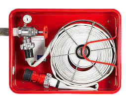
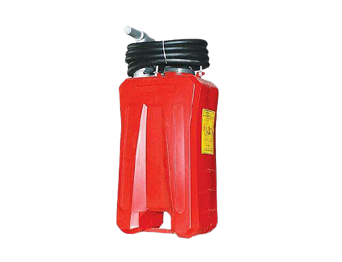
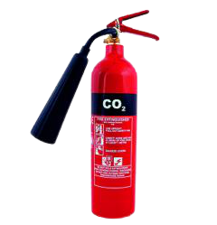
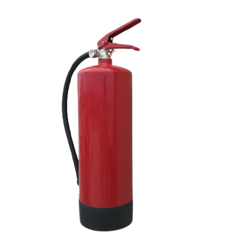

Пожарогасителят е активно устройство, което се използва за гасене или ограничаване на малки пожари, най-често в аварийни ситуации. Не е предназначен за гасене на големи пожари и такива, които изискват намесата на пожарните служби. Пожарогасителите са необходими дори ако помещението е снабдено с автоматични спринклери, тръбопровод и маркуч или други стационарни съоръжения за защита. Обикновено пожарогасителят е под формата на червена цилиндрична бутилка, съдържаща агент под налягане, който може да бъде освободен, за гасене на огъня.
Монтира се в специална ниша на всеки етаж и се свързва със специално изграден водопровод.Състои се от шланг с дължина 20 м., струйник, спирателен кран.
Кофпомпата работят двама или трима души. Единият помпа, вторият насочва струята към пожара, а при необходимост третият я зарежда с вода.
Предназначен е за гасене на начални пожари, възникнали в двигатели с вътрешно горене, електрически машини, включително под напрежение, леснозапалими течности, ценни предмети и книжа.
Използват се за гасене на пожари, възникнали в химически съединения, алкални метали, леснозапалими течности, транспортни средства, електрически инсталации
